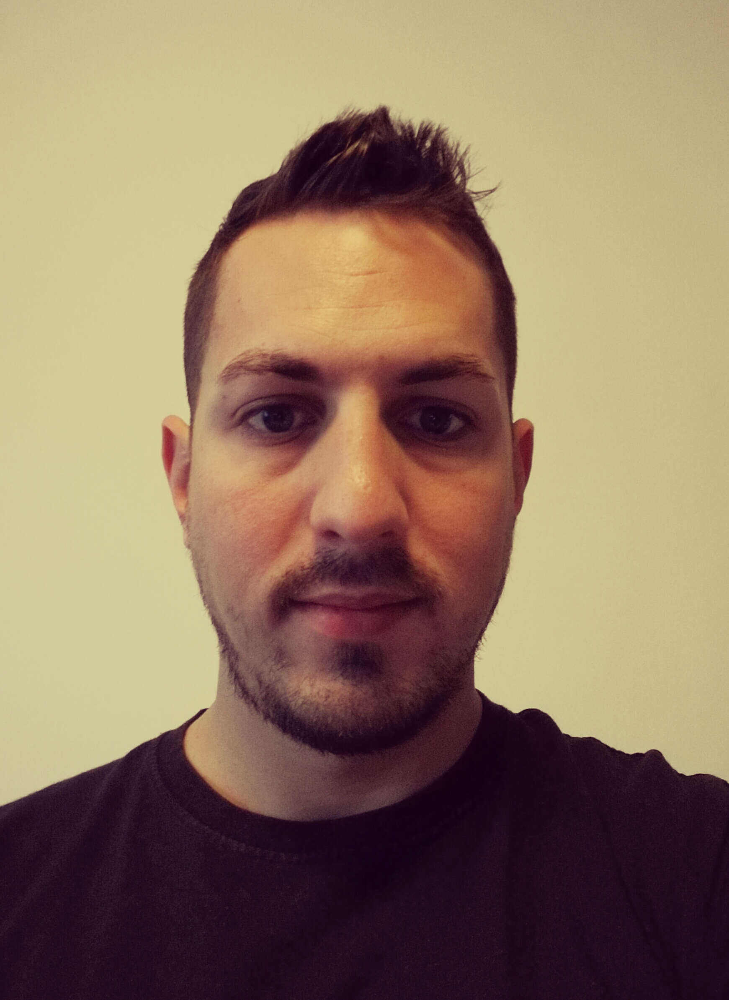

Ich bin in Budapest aufgewachsen, der Hauptstadt von Ungarn. Ich bin ein positiver, extrovertierter Mensch, der gerne anderen hilft und nach neuen Möglichkeiten sucht, was das Leben von einem Tag auf den anderen bietet. Ich bin ein Mensch, der immer gerne neue Bereiche des Lebens erkundet und versucht, den Teil der Dinge zu finden, der meiner Persönlichkeit am besten entspricht. Ich verbringe gerne Zeit mit meiner Familie, lese, höre Musik oder spiele Videospiele. Ich mag auch Sportarten wie Fußball, Basketball, Tennis, F1. Manchmal mag ich einfach nichts tun, aber ich langweile mich irgendwie und beginne mich wegen meines Gewissens unwohl zu fühlen.#Lorinc.
Lorinc Nagy
lighting specialist
fromBudapest, HU

My favourite quote
"Don't be afraid to take a big step if one is indicated. You can't cross a chasm in two small jumps".